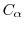

This command checks the alignment of the target sequence (the last entry in the alignment) with each of the templates: For all consecutive pairs of  atoms in the target, it calculates the distance between the two equivalent atoms in each of the templates. If the distance is longer than gapdist Å, it is reported. In such a case, the alignment between the template and the target is almost certainly incorrect. The total number of exceeded pair distances is returned.